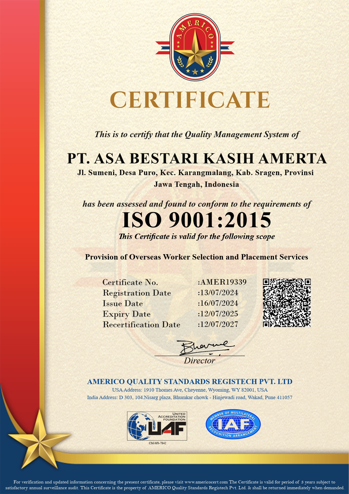
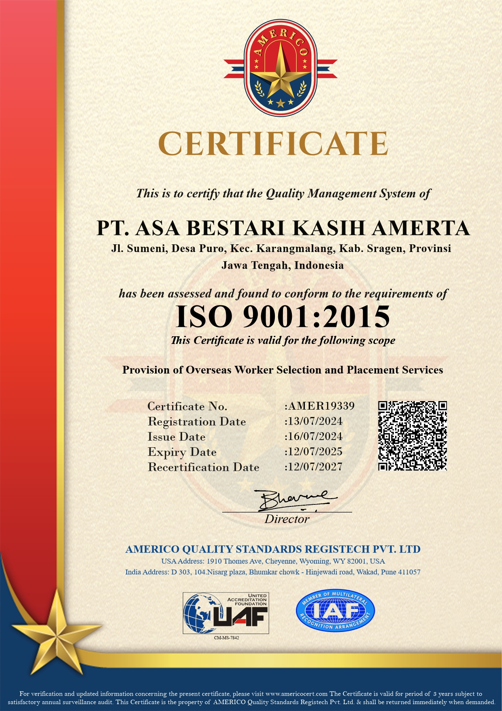

PT. ASA BESTARI KASIH AMERTA
株式会社ASA BESTARI KASIH AMERTA
Perusahaan yang bergerak dalam bidang penempatan pekerja migran Indonesia. Perusahaan telah berkomitmen untuk memberikan layanan penempatan yang berkualitas dan terpercaya bagi para pekerja migran Indonesia yang mencari kesempatan kerja di luar negeri. Perusahaan ini berlokasi strategis di Kabupaten Sragen, Provinsi Jawa Tengah, memudahkan akses bagi calon pekerja migran dari berbagai daerah.
Kami hadir sebagai solusi bagi generasi muda Indonesia yang ingin bekerja di Jepang dengan proses yang jelas, aman, and sesuai regulasi pemerintah Indonesia maupun Jepang. Seluruh peserta dibina tidak hanya secara teknis, tetapi juga dari sisi mental, etika, dan budaya kerja Jepang.
当社は、インドネシア人労働者の海外送出し事業を行う企業です。 海外での就労機会を求める方々に対し、高品質かつ信頼できるサービスを提供することに尽力しています。 中部ジャワ州スラゲン県という好立地に拠点を置き、様々な地域からの候補者がアクセスしやすい環境を整えています。
当社は、日本での就労を希望するインドネシアの若者に対し、両国政府の規制に準拠した明確かつ安全なプロセスを提供します。 参加者に対しては、技術面だけでなく、精神面、礼儀、日本の労働文化についても指導・育成を行っています。
Visi
ビジョン
Menjadi mitra terpercaya bagi pekerja migran Indonesia dalam mencari kesempatan kerja yang aman, bermartabat, dan berkelanjutan di luar negeri.
安全で尊厳のある、持続可能な海外就労の機会を求めるインドネシア人労働者にとって、信頼されるパートナーとなること。
Misi
ミッション
- Menyediakan layanan penempatan pekerja migran Indonesia yang berkualitas, aman, dan sesuai dengan peraturan yang berlaku.
- Memberikan pelatihan dan persiapan yang komprehensif.
- Memastikan keamanan, kesejahteraan, dan hak-hak pekerja migran.
- Membangun kerjasama yang erat dengan pemerintah dan mitra.
- Mendukung pengembangan ekonomi dan sosial di komunitas asal.
- 関連法規を遵守し、高品質かつ安全なインドネシア人労働者の送出しサービスを提供すること。
- 包括的な研修と事前準備を提供すること。
- 移民労働者の安全、福祉、権利を確保すること。
- 政府およびパートナーと緊密な協力関係を構築すること。
- 出身地域の経済的および社会的発展を支援すること。
LPK YORISOI CAREGIVER INDONESIA
Didirikan pada bulan November 2021 adalah lembaga pelatihan bahasa jepang yang bernaung dibawah PT. Asa Bestari Kasih Amerta yang menjadi spesialis pelatihan bahasa Jepang dan pengetahuan tentang Caregiver (Perawat Lansia).
Kami membuka kesempatan bagi putra-putri Indonesia baik lulusan SMA/K Umum/Keperawatan, D3/S1 yang ingin menjadi Caregiver di Jepang dengan Program Tokutei Ginou (SSW).
Meningkatnya jumlah kebutuhan pekerja asing dari Indonesia di Jepang, membuat kami tergugah untuk menjadi Jembatani mimpi mereka.
Maka dari itu kami membentuk LPK Yorisoi Caregiver Indonesia, untuk mewujudkan mimpi mereka bekerja di Jepang.
2021年11月に設立された当機関は、PT. Asa Bestari Kasih Amertaの傘下にあり、日本語教育および介護（高齢者ケア）に関する知識の習得に特化した研修機関です
当社は、特定技能（SSW）制度を通じて日本で介護職として働くことを希望する、SMA/SMK（一般・看護）、D3、S1卒業資格を持つインドネシアの若者たちへ、その機会を提供しています。
日本におけるインドネシア人労働者への需要が高まる中、私たちは彼らの夢の「架け橋」となりたいという強い思いを抱きました。
そこで、日本で働くという彼らの夢を実現するために、LPK Yorisoi Caregiver Indonesiaを設立いたしました。
Inovasi yang sedang dikembangkan
開発中のイノベーション
Kami merancang ekosistem terpadu yang mencakup pembekalan bahasa Jepang, pelatihan budaya kerja, serta proses pemberangkatan melalui jalur legal dan resmi.
当社は、日本語教育、労働文化の研修、そして正規・合法ルートによる送出しプロセスを網羅した、統合的なエコシステムを構築しています。
Ekspansi kedepan
今後の展開
Ke depan, kami berkomitmen untuk memperluas jangkauan ke lebih banyak sektor pekerjaan dan wilayah di Jepang.
今後は、日本におけるより多くの職種や地域へと事業を拡大していくことに尽力いたします。
Program Pelatihan
研修プログラム (Program Pelatihan)
Program pelatihan di LPK Yorisoi Caregiver Indonesia dirancang secara intensif untuk memastikan peserta siap secara bahasa, keterampilan, mental, dan budaya kerja.
LPK Yorisoi Caregiver Indonesiaの研修プログラムは、語学、技能、精神面、そして労働文化の面で参加者が万全の準備を整えられるよう、集中的に設計されています。
Ruang Lingkup Program
プログラムの範囲 (Ruang Lingkup)
- Pelatihan Bahasa Jepang tingkat dasar hingga menengah (N4).
- Pembinaan sikap kerja, etika, dan budaya kerja Jepang.
- Pelatihan teknis caregiver sesuai standar Jepang.
- Pelatihan teknis bidang lain selain caregiver.
- Simulasi ujian, wawancara, dan kehidupan kerja.
- Pendampingan administrasi dan keberangkatan.
- 初級から中級（N4レベル）までの日本語研修。
- 勤務態度、マナー、日本の労働文化に関する指導。
- 日本の基準に準拠した介護技能研修。
- 介護以外の分野における技術研修。
- 各種試験、面接、および就労生活のシミュレーション。
- 事務手続きおよび渡航のサポート。
Dokumentasi Kegiatan
活動の記録 (Dokumentasi)
Pelatihan Bahasa
言語研修
Praktik Jidousha Seibi
自動車整備実習
Foto Bersama Di Panti
施設での集合写真
Kelas Praktik Caregiver
介護実習クラス
Praktik Caregiver
介護実習
Praktik Jidousha Seibi
自動車整備実習
Testimoni Peserta
参加者の声
“Pelatihan di LPK Yorisoi Caregiver Indonesia sangat disiplin dan terarah...”
“LPK Yorisoi Caregiver Indonesiaでの研修は、非常に規律正しく、明確な目標を持って行われています...”
Legalitas & Kerja Sama
合法性と提携
PT. ASA BESTARI KASIH AMERTA & LPK Yorisoi Caregiver Indonesia beroperasi secara resmi dan mematuhi seluruh ketentuan hukum yang berlaku di Indonesia.
PT. ASA BESTARI KASIH AMERTA & LPK Yorisoi Caregiver India は正式に運営されており、インドネシアで適用されるすべての法律を遵守しています。
Dokumen Legal
法的書類 (Dokumen Legal)
- Nomor Induk Berusaha (NIB) yang terdaftar resmi.
- Izin Aktivitas Penyeleksian Dan Penempatan Tenaga Kerja Luar Negeri
- Izin Operasional Lembaga Pelatihan Kerja.
- Dokumen Akreditasi Nasional.
- Dokumen Akreditasi International.
- 正式に登録された事業基本番号 (NIB)。
- 海外労働力選抜・派遣活動許可証。
- 職業訓練機関 (LPK) の運営許可証。
- 国家認定証。
- 国際認定証。
 

Tim & Struktur Organisasi
チームと組織図
Lokasi Kantor Kami
オフィスの場所 (Lokasi Kantor)
Klik gambar peta atau tombol di bawah untuk melihat navigasi langsung ke titik kantor kami.
地図をクリックするか、下のボタンを押して、オフィスへのルートを確認してください。
Kantor Pusat (Sragen)
本社 (Kantor Pusat - Sragen)
Jl. Sumeni Margorejo, RT.43, Puro, Kec. Karangmalang, Kabupaten Sragen, Jawa Tengah 57222
Buka di Google MapsLPK YORISOI CABANG 2 SRAGEN
LPK YORISOI 第2支部 (Cabang 2)
Jl. Majapahit, Ngablak, Kroyo, Kec. Karangmalang, Kabupaten Sragen, Jawa Tengah 57211
Buka di Google MapsLPK YORISOI CABANG 3 TANON SRAGEN
LPK YORISOI 第3支部 (Cabang 3)
Jl. Gabugan - Sragen, Kebayanan 1, Gawan, Kec. Tanon, Kabupaten Sragen, Jawa Tengah 57277
Buka di Google Maps